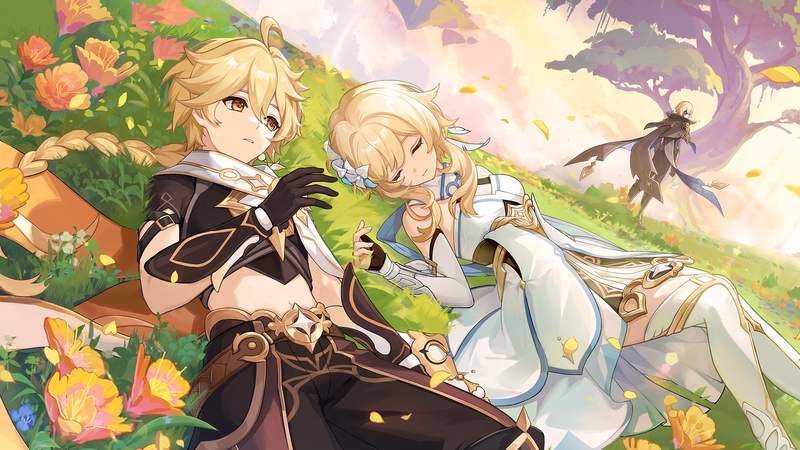

Genshin Impact is an open-world action role-playing game developed and published by miHoYo. The game features an expansive world with diverse landscapes, elemental combat systems, and a gacha-based character acquisition system. Genshin Impact takes place in the fantasy world of Teyvat, home to seven nations, each of which is tied to a different element and ruled by a different god (archon).
Plot
Aether and Lumine, a pair of twins who travel across different worlds, land in Teyvat. Witnessing the destruction of Khaenri'ah upon their arrival, the two attempt to flee, but they soon find their path blocked by a mysterious god who calls herself the "Sustainer of Heavenly Principles". She separates the twins, sealing the playable character away for five hundred years. When the sealed sibling, now called "The Traveler", wakes up, they meet a small fairy-like being named Paimon, who becomes their companion and travel guide. The two set off on a journey across Teyvat to gather information about their lost twin from each nation's ruling Archon.

Game Highlights
Memorable Moments
Encountering the Seven
Meeting the elemental gods who rule over Teyvat's regions, revealing deep lore and world-building.
Unveiling Khaenri'ah's Fate
Learning about the tragic history and destruction of the mysterious kingdom of Khaenri'ah.
Epic Boss Battles
Facing off against powerful adversaries like Stormterror, Childe, and Azhdaha, challenging players' combat skills and advancing the story.
Character Quests
Exploring personal stories and backgrounds through character-specific quests, deepening connections with the game's diverse cast.
Seasonal Events
Participating in festive events like Lantern Rite and Windblume Festival, offering unique quests, challenges, and rewards.
Multiplayer Adventures
Joining forces with friends in cooperative multiplayer to tackle dungeons, defeat bosses, and explore together.
Key Characters
Meet iconic characters like Traveler, and archons like venti(anemo), zhongli(geo) and more, each with unique abilities and stories.
Events
Participate in seasonal events like Lantern Rite and Windblume Festival.
How to Get Started
Equipment Needed
All you need is a compatible device (PC, PS4/5, iOS, Android) and an internet connection.
Basic Strategies
Master elemental reactions and team synergies to defeat enemies effectively.
Beginner Tips
Start by completing story quests to unlock new characters and explore the game world.